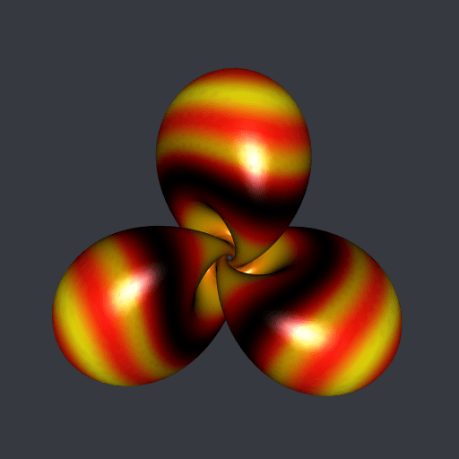

Hopf torus with dynamic colors
In a recent post I explained how to decorate a surface with moving colors with the Python library PyVista. Here I expose this method for the R package rgl.
I will take a Hopf torus with fives lobes for the illustration. The following R function is a slight modification of the parametric3d function of the misc3d package. It is more efficient for the Hopf torus parameterization and it returns a rgl object of class mesh3d.
library(misc3d)
library(rgl)
parametricMesh3d <- function(
Fxyz, umin, umax, vmin, vmax, nu, nv
){
u <- seq(umin, umax, length.out = nu)
v <- seq(vmin, vmax, length.out = nv)
tg <- misc3d:::expandTriangleGrid(u, v)
f <- function(uv) Fxyz(uv[, 1L], uv[, 2L])
v1 <- f(tg$v1)
v2 <- f(tg$v2)
v3 <- f(tg$v3)
tris <- makeTriangles(v1, v2, v3)
mesh0 <- misc3d:::t2ve(tris)
addNormals(
tmesh3d(
vertices = mesh0$vb,
indices = mesh0$ib
)
)
}The R function below is the parameterization of the Hopf torus.
HTxyz <- function(u, v, nlobes = 5, A = 0.38){
C <- pi/2 - (pi/2-A)*cos(u*nlobes)
sinC <- sin(C)
D <- u + A*sin(2*u*nlobes)
p1 <- cos(C) + 1
p2 <- sinC * cos(D)
p3 <- sinC * sin(D)
cos_v <- cos(v)
sin_v <- sin(v)
x1 <- cos_v*p3 + sin_v*p2
x2 <- cos_v*p2 - sin_v*p3
x3 <- sin_v * p1
xden <- sqrt(2*p1) - cos_v*p1
cbind(x1/xden, x2/xden, x3/xden)
}Let’s make the Hopf torus mesh now.
mesh <- parametricMesh3d(
HTxyz, umin = 0, umax = 2*pi, vmin = -pi, vmax = pi, nu = 600, nv = 400
)We will assign a color to each point on the surface, according to the distance from the point to the origin. We calculate these distances below, and we linearly map them to the interval $[0, 2].
d <- sqrt(apply(mesh$vb[-4L, ], 2L, crossprod))
d <- 2*pi * (d - min(d)) / diff(range(d))Now we introduce a color palette function. The trekcolors package has nice color palettes. I’m taking the dominion palette.
library(trekcolors)
fpalette <- colorRamp(
trek_pal("dominion"), bias = 0.6, interpolate = "spline"
)This function fpalette assign a color, given by its RGB values, to each number between \(0\) and \(1\). As in Python, we will calculate \(\sin(d -t)\) to move the colors, with \(t\) varying from \(0\) to \(2\pi\). The sine function takes its values in \([-1, 1]\) so we will map this interval to \([0,1]\) with the affine function \(x \mapsto \frac{x+1}{2}\) in order to apply the fpalette function.
We will also rotate the Hopf torus around the \(z\)-axis. By the symmetry of the Hopf torus, it suffices to make the rotation with an angle varying from \(0\) to \(2\pi/5\).
t_ <- seq(0, 2*pi, length.out = 73)[-1L]
angle_ <- seq(0, 2*pi/5, length.out = 73)[-1L]
for(i in seq_along(t_)){
RGB <- fpalette( (sin(d-t_[i])+1)/2 )
mesh[["material"]] <-
list(color = rgb(RGB[, 1L], RGB[, 2L], RGB[, 3L], maxColorValue = 255))
rmesh <- rotate3d(mesh, angle_[i], 0, 0, 1)
open3d(windowRect = c(50, 50, 562, 562))
view3d(0, 0, zoom = 0.55)
spheres3d(0, 0, 0, radius = 11, color = "white", alpha = 0) # to fix the view
shade3d(rmesh)
rgl.snapshot(sprintf("pic%03d.png", i))
close3d()
}This code generates a series of png files pic001.png, …, pic072.png. Using ImageMagick or gifski, we obtain this gif animation from these files:

Very well. But these are not my favorite colors. And I prefer the Hopf torus with three lobes. Below it is, decorated with the klingon color palette of trekcolors; I prefer this one.
